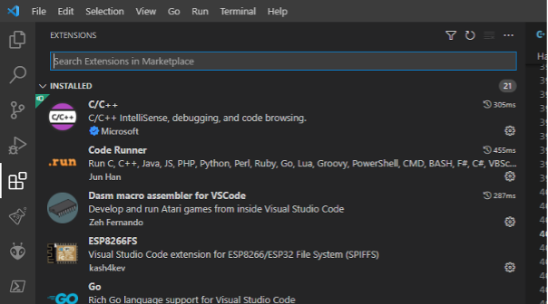
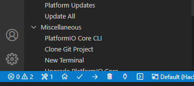
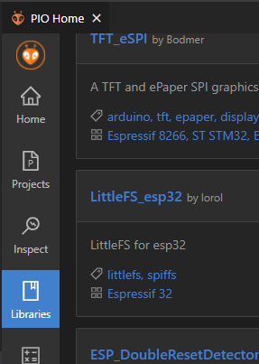
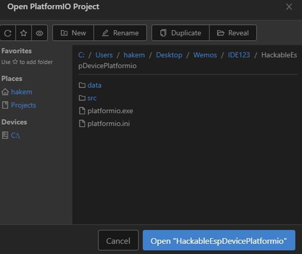
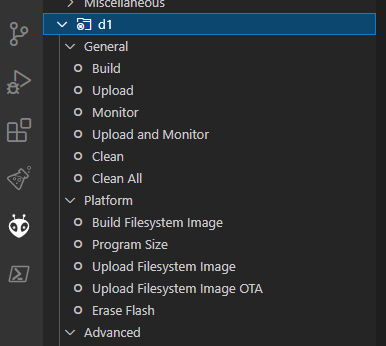
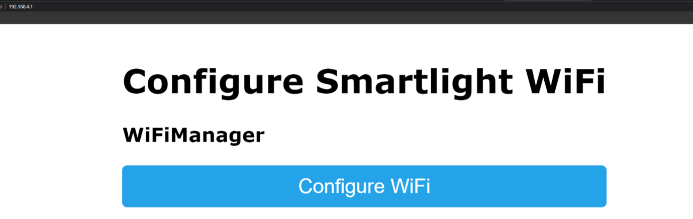
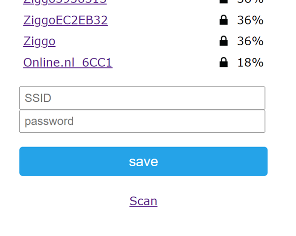
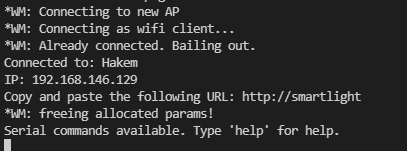
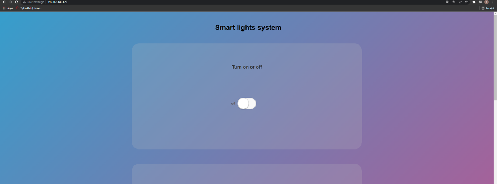

Installation Manual
Preface
This manual is meant for total beginners that want to experiment with the d1 mini controller. We are going over the installation in platformIO we chose this over Arduino.IDE because it is much easier to set up and use. If you don't know these programs don't worry we will guide you through this process. But before we dive into the tutorial what is an d1 mini esp8266 well it is an microcontroller you can find microcontrollers everywhere from microwaves to cars. It's basically a cheap computer with not that much processing power. The device is used frequently for home appliances or toys. What we are going to do with the device is control the LED attached to the micro controller. We are going to do this with an online website. The online website is provided with an unauthorized panel, user panel and admin panel. But this isn't a regular website it has a few vulnerbilities hidden in it. Not only the website but also the d1 mini itself has some vulnerbilities and is not out of the scope. We are going to tackle the machine but first we need to set it up. Thanks for reading and enjoy the project!
Starting the project
Alright! You made it, Let's setup the device first connect your device to your computer via a micro USB cable. When you're finished you should see a blinking light now we are ready to install the driver for the device.
https://github.com/HobbyComponents/CH340-DriversIf you're having trouble installing the driver check if your cable is properly inserted into the device. Changing the cable can also help.
Visual studio code
Install Visual Studio Code, you most likely have it already installed on your computer. Download the extension PlatformIO. If it is your first time using Visual Studio Code you can find the extension page here.
Platformio Boards
Go to Platformio by clicking the home button which is located at the bottom left.
Navigate to boards and type in the search bar
Downloading LittleFS
Navigate to libraries and download LittleFS_esp32.
Importing the folder
The next thing we need to take care of is the folder you only need to import the configured < HackableEspDevicePlatformio > folder. This folder is as of now not yet uploaded into the repository. You can activate the platformio.exe file with powershell and to build the program. Only if you are receiving errors. De errors from powershell are much clearer than platformio. Don't forget to run it as administrator.
Building and upload
Go to platformio again. You will see a sidebar, you see the previous installed board the d1 board.
Next we are going to build the project, upload the project build filesystem image and finally upload filesystem image.
The website
Click on monitor (see previous image) and you should see an Ip-address like 198.168.4.1 in the terminal. Check your network connections and connect to the access point using your computer and make an access point (hotspot) you can connect to using your phone. Click on configure WiFi.
Connecting to wifi
Connect to the hotspot you created with your phone. You can't connect to routers. Once you entered the password and SSID you can continue.
Check if it's working
You can always check the monitor function on platformio to see what your device is doing. The output will show in the terminal.
Access the IP-address
Finally we can Access the web-page that controls the LED light. We only need to go to the URL we found in our monitoring process. In our case 192.168.146.129. You can add smart light in your /etc/hosts file. So you won't have to remember the IP-Address.
